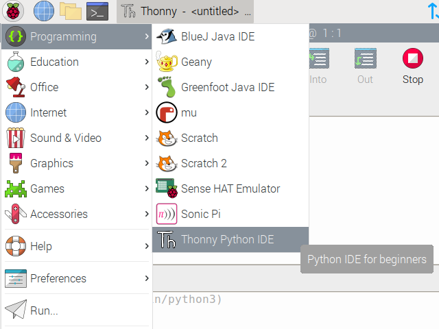
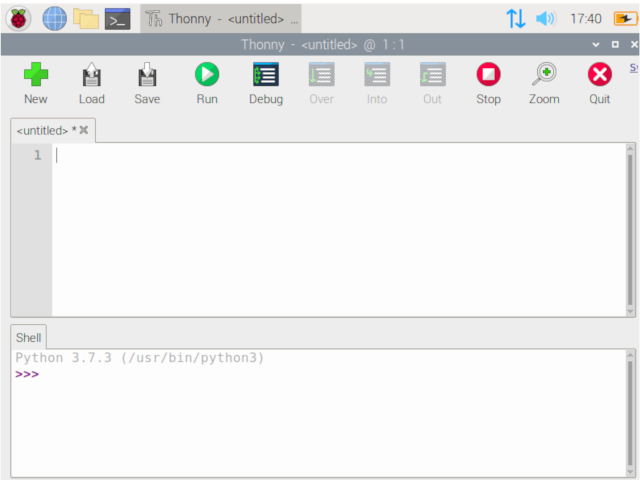

A Raspberry Pi Workshop
What is a Raspberry Pi?
A single board computer, which contains
- CPU
- Random Access Memory (RAM)
- Wifi/Bluetooth
So basically, like a regular computer but with some different features.
 Hardware Overview (Raspberry Pi 4)
Hardware Overview (Raspberry Pi 4)
 Projects are found all over the internet
Projects are found all over the internet
Raspbian OS
Like every other operating system (Windows/MacOS), Raspbian OS manages computer hardware, software resources, and computer programs
It is based off Debian (Linux)
Computer Vision is the field of computer science that enables computers to identify and process objects in images and videos in the same way that humans do.
 Representation of computer vision
Representation of computer vision
Applications of computer vision
- Intruder alert
- Method of authentication (unlocking your phone through fingerprint/facial recognition)
- Monitor traffic flow
- Identification of criminals
- A form of user input (hand gestures)
- Self-driving cars
- And many more...!
What is OpenCV then?
OpenCV stands for Open Source Computer Vision Library
OpenCV was built to provide a common infrastructure for computer vision applications.
It contains more than 2500 optimized algorithms.
Makes computer vision programs easier to build.

Alternatively, click on its logo or open it from the menu.
Terminal commands
Showing items in your current directory
ls(List)>> Desktop Documents Home Downloads Music cdUse this code to navigate to another directorycd DocumentsNavigating to the "Documents Directory" cd ..Navigating out of the current directorypython test.pyRunning a python file "test.py" Your task now: navigate to the histogram python file you have just saved and run it.
Hint: It is in the Documents folder


Each pixel has a brightness intensity value, showing how bright that spot in the image is.
giving rise to a total range of 256 values

Grayscale Histogram


RGB Histogram
The X and Y-axis indicates the intensity and frequency of a certain color value respectively
Okay, but what do people even use histograms for?

It allows data scientists and engineers to visually analyse the frequency and distrbution of data

It allows geographers and hydrologists to map out the intensity and analyse the rainfall

It allows photographers to check the exposure (how bright or dark) of an image
message = "Who here is familiar with Python?"print(message) >>> Who here is familiar with Python?RAM = 4Integer variableCPU_GHZ = 1.5Float variablename = "Raspberry Pi"String variable
tools = ["Mouse", "Keyboard", "Monitor",
"HDML Cable", "Micro USB Power Cable",
"Micro SD Card"]
Array (An array in Python can contain any types of variables,
be it integer, float, or string, or even all at once.)
if RAM == 5: # Conditional statement
print("A pi has 5GB of RAM.")
elif RAM == 4: # Second conditional statement
print("A pi has 4GB of RAM.")
else: # If all the above is false
print("I do not know...")
If-elif-else conditionals & comments
RAM += 5Shorthand for "RAM = RAM + 5"RAM = RAM / 2Divison (returns a float if number has a remainder)RAM = RAM // 2Floor Division (returns an integer)RAM = RAM % 2Modulo (returns the remainder when RAM is divided by 2)
def addition (a, b):
result = a + b
return result
addition(3,5)
>>> 8
Call the function using "function_name(inputs)"
def addition (a, b):
result = a + b
print(result)
A function can also not return anything.
for i in range (5):
print(i)
>>> 0 1 2 3 4
for i in range (1, 10, 2):
print(i)
>>> 1 3 5 7 9
name = "Raspberry"
for char in name:
print(char)
>>> R a s p b e r r y
name = "recording"
while True:
print(name)
>>> recording
.....
>>> recording
Continues on infinitely
import numpy
import cv2
Using pre-built functions from libraries.
Using OpenCV to...
open files/live webcam video
display image/video histograms
Let's start coding!
First, open up the code editor Thonny.
 Importing essential modules
import numpy as np
import cv2
from matplotlib import pyplot as plt
🛈 What are these for?
- Numpy is a useful mathematical library that allows us to
work easier with the large array of pixel information. - cv2 contans useful functions whose algorithms are extremely efficient in processing images and video.
- Matplotlib is a graph-plotting library for us to better
visualize data.
1. Static image histogram
2. Live or dynamic histogram
Static Histogram
Accepting image file using OpenCV
cap = cv2.imread("image.png", 0)Plotting histogram
plt.hist(cap.ravel(),256,[0,256])🛈 256 represents the intensity range of each pixel
plt.figure()
for i,col in enumerate(color): # for each color channel
histr = cv2.calcHist([img],[i],None,[256],[0,256])
plt.plot(histr,color = col)
plt.xlim([0,256]) plt.show()Live Histogram
Accepting video file using OpenCV
cap = cv2.VideoCapture('video.mp4')cap = cv2.VideoCapture(0)cv2.imshow("Live feed", cap)
color="rgb" ❓ Why does it only show a static image?
This code shows the current frame of the video file or webcam image. To show the whole video or webcam feed, this code needs to be put in a loop to display the latest frame constantly.
WARNING: LARGE CHUNKS OF CODE AHEAD
# Initialize plot.
fig, ax = plt.subplots()
if color == 'rgb':
ax.set_title('Histogram (RGB)')
else:
ax.set_title('Histogram (grayscale)')
ax.set_xlabel('Bin')
ax.set_ylabel('Frequency')# Initialize plot line object(s). Turn on interactive plotting and show plot.
lw = 0.8 # line width
alpha = 0.7 # opacity of graph
if color == 'rgb':
lineR, = ax.plot(np.arange(bins), np.zeros((bins,)), c='b', lw=lw, alpha=alpha)
lineG, = ax.plot(np.arange(bins), np.zeros((bins,)), c='g', lw=lw, alpha=alpha)
lineB, = ax.plot(np.arange(bins), np.zeros((bins,)), c='r', lw=lw, alpha=alpha)
else:
lineGray, = ax.plot(np.arange(bins), np.zeros((bins,1)), c='k', lw=lw)
ax.set_xlim([0, bins-1])
ax.set_ylim([0, 8000])
plt.ion()
plt.show()while True:
(grabbed, frame) = cap.read()
if not grabbed:
break
# Normalize histograms based on number of pixels per frame.
numPixels = np.prod(frame.shape[:2]) if color == 'rgb':
cv2.imshow('RGB', frame)
(b, g, r) = cv2.split(frame)
histogramR = cv2.calcHist([r], [0], None, [bins], [0, 255])
histogramG = cv2.calcHist([g], [0], None, [bins], [0, 255])
histogramB = cv2.calcHist([b], [0], None, [bins], [0, 255])
lineR.set_ydata(histogramR)
lineG.set_ydata(histogramG)
lineB.set_ydata(histogramB)
else:
gray = cv2.cvtColor(frame, cv2.COLOR_BGR2GRAY)
cv2.imshow('Grayscale', gray)
histogram = cv2.calcHist([gray], [0], None, [bins], [0, 255]) / numPixels
lineGray.set_ydata(histogram) fig.canvas.draw()
if cv2.waitKey(1) & 0xFF == ord('q'):
breakcap.release() # to stop the camera from recording
cv2.destroyAllWindows() # to close live feed
plt.close() # to close histogramIsolating objects using distinct colors
How it works

If we were to isolate the "red parts"....

Using a similar histogram idea, we can isolate a prominent colour with a mask
low_red = np.array([255,255,255])
high_red = np.array([255,0,0])
Initialise a Numpy Array with Red, Green and Blue valuesred_mask = cv2.inRange(hsv_frame, low_red, high_red)
inRange function creates a maskcontours, retrieveval = cv2.findContours(red_mask, cv2.RETR_TREE, cv2.CHAIN_APPROX_SIMPLE)
Using cv2 find Contours in-built librarycontours = sorted(contours, key = lambda x:cv2.contourArea(x), reverse=True)eg. [254, 252, 198...]if len(contours)>0: #check if webcam has started recording
(x,y,w,h) = cv2.boundingRect(contours[0])
#takes the first values in the array
print("X_mid:",x+w/2,"Y_mid:",y+h/2) #optional
cv2.rectangle(frame,(x,y),(x+w,y+h), (0,255,0),2)
#inbuilt function for drawing rectangles
Documentation shows the function parameters
cv2.imshow("Tracking", frame)
cv2.imshow("Mask over", red_mask)
if cv2.waitKey(1) & 0xFF == ord('q'):
breakCanny Edge Detection is a popular edge detection algorithm. It was developed by John F. Canny in 1986.

- Noise reduction
- Finding Intensity Gradient of the Image
- Non-maximum Suppression
- Hysteresis Thresholding

Gaussian Blur
An image smoothening techniqueGaussian functions are often used to represent the probability density function of a normally distributed random variable.


Finding intensity gradient
Applying the mask of the Sobel operator works like the 1st-order derivative.The goal is to calculate the difference of pixel intensities in a edge region.

Non-maximum Suppression
A full scan of image is done to remove any unwanted pixels which may not constitute the edge.
Hysteresis Thresholding
Finding the optimal value that constitute an edge
is_edge = False
if pixel >= maxVal:
is_edge = True
elif pixel < minVal:
pixel = 0
is_edge = False
else:
# minVal <= pixel < maxVal
if pixel.isConnectedTo(edges):
is_edge = True
else:
pixel = 0
is_edge = False